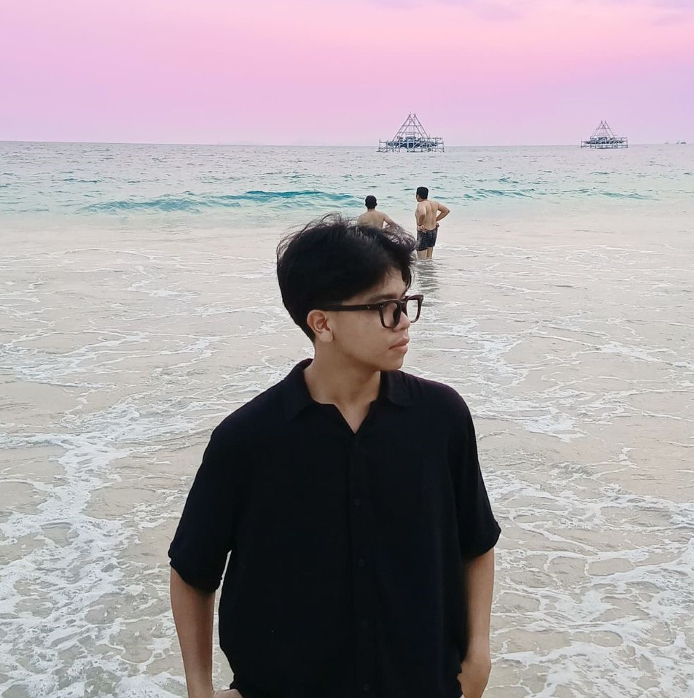
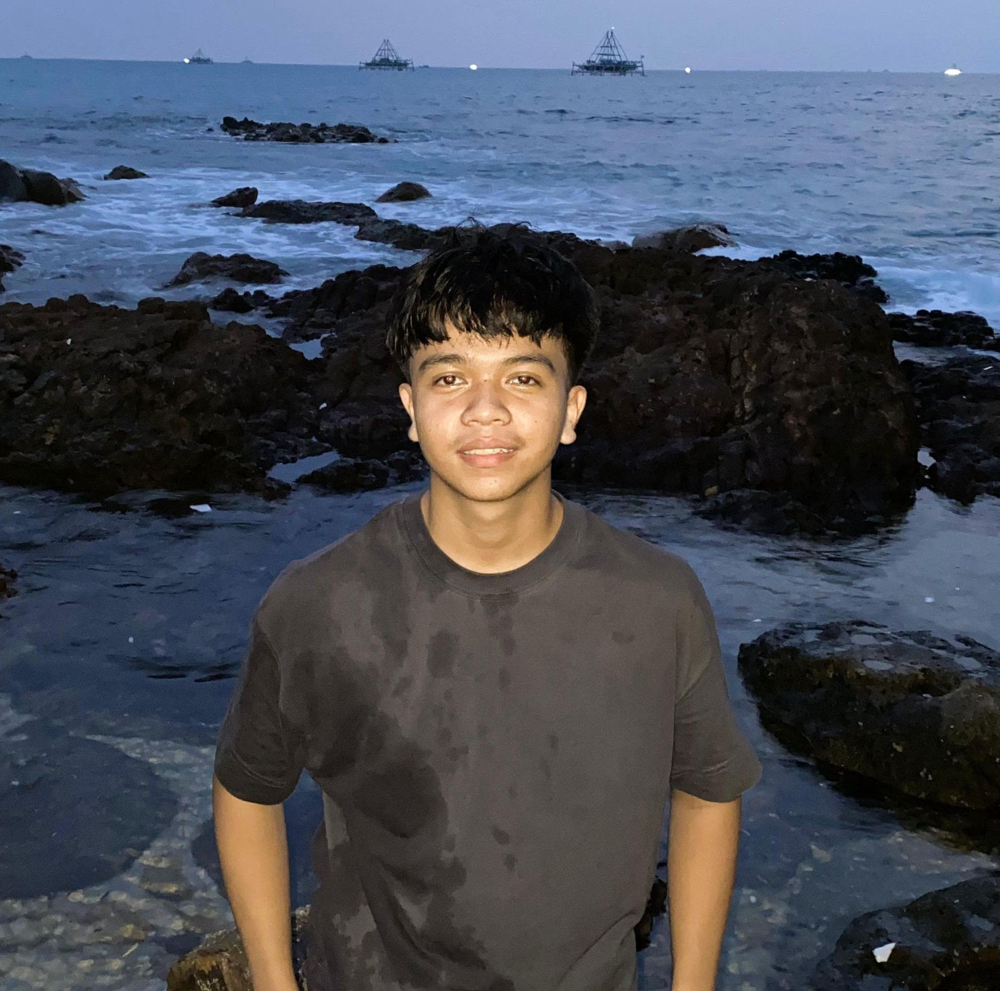

Halo, saya Dimas Aprianto!
Selamat datang di situs pribadi saya.

Saya seorang mahasiswa semester 3, web designer, dan calon programmer profesional. Saya tinggal di
Negeri Sakti, Pesawaran, dan memiliki passion besar di bidang teknologi.
Selamat Datang
Saya adalah seorang mahasiswa semester 3 yang juga bekerja sebagai web designer. Ia tinggal di
Negeri Sakti, Pesawaran, sebuah daerah yang memberinya inspirasi untuk terus berkembang.
Saya memiliki minat besar dalam dunia teknologi, khususnya di bidang pemrograman dan desain web. Dengan
tujuan menjadi seorang programmer profesional, ia terus belajar dan mengasah keterampilannya di dunia
coding.
Selain kesibukannya dalam studi dan pekerjaan, Dimas juga aktif menjalani hobi seperti running dan
berenang.
Keduanya membantu menjaga keseimbangan antara produktivitas dan kesehatan, sekaligus memberikan energi
untuk
terus berkarya. Dengan semangat belajar dan inovasi, Dimas bercita-cita memberikan kontribusi positif
dalam
industri teknologi sekaligus menginspirasi generasi muda di sekitarnya.